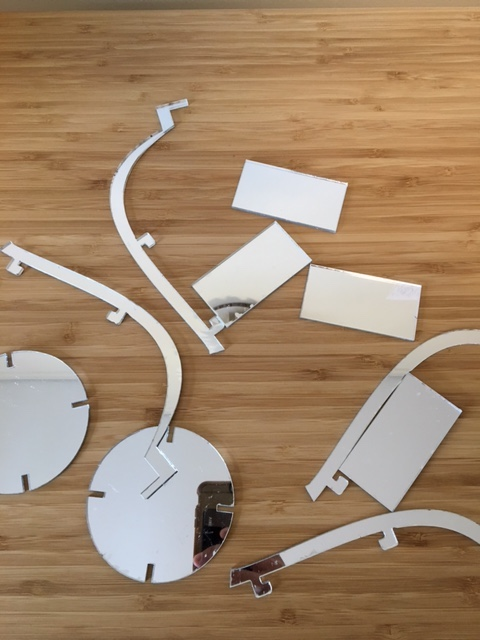
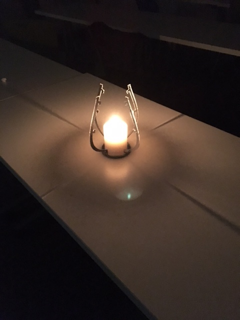
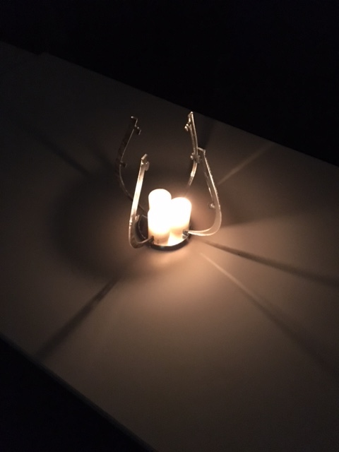

This week, I attempted to refine the selected focus into an actual product; an enclosure for candles that creates beautiful refraction patterns, focusing on the aesthetic. The ultimate plan is to create a press-fit kit, constrained such that all constructions with the kit create beautiful patterns, but still flexible enough to allow users to tailor the focus -- directing the light where necessary. Thus, this week, I designed and cut a press-fit candle enclosure, using mirrored acrylic.
The first step was to fire up Fusion 360, and design the press-fit kit. The only real design note here is that, in the future, instead of using the exact thickness of the material for notches, I will use a measurement that is slightly less than the thickness (will assist in maintaining structural integrity -- with a snug fit).
A little laser-cutting (and plenty of CAD-fiddling later), and the pieces were cut. Note for next time: there is no need to use mirrorred acrylic for the body of the structure -- it is only necessary for the reflective component of the structure. The entire piece would probably be more aesthetically pleasing if the body were cut out of wood.
Once cut, it was time for pictures.
 